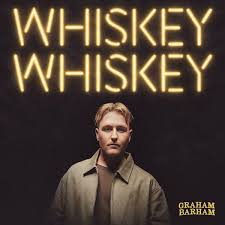
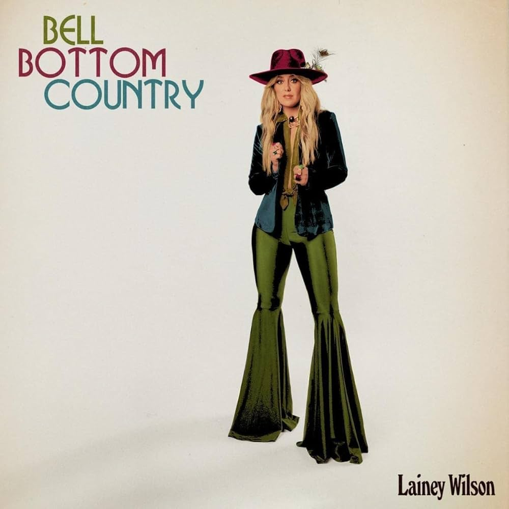
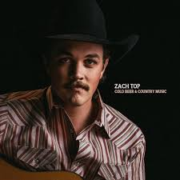
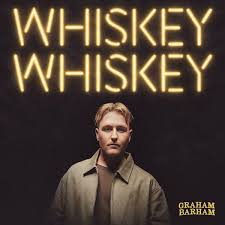
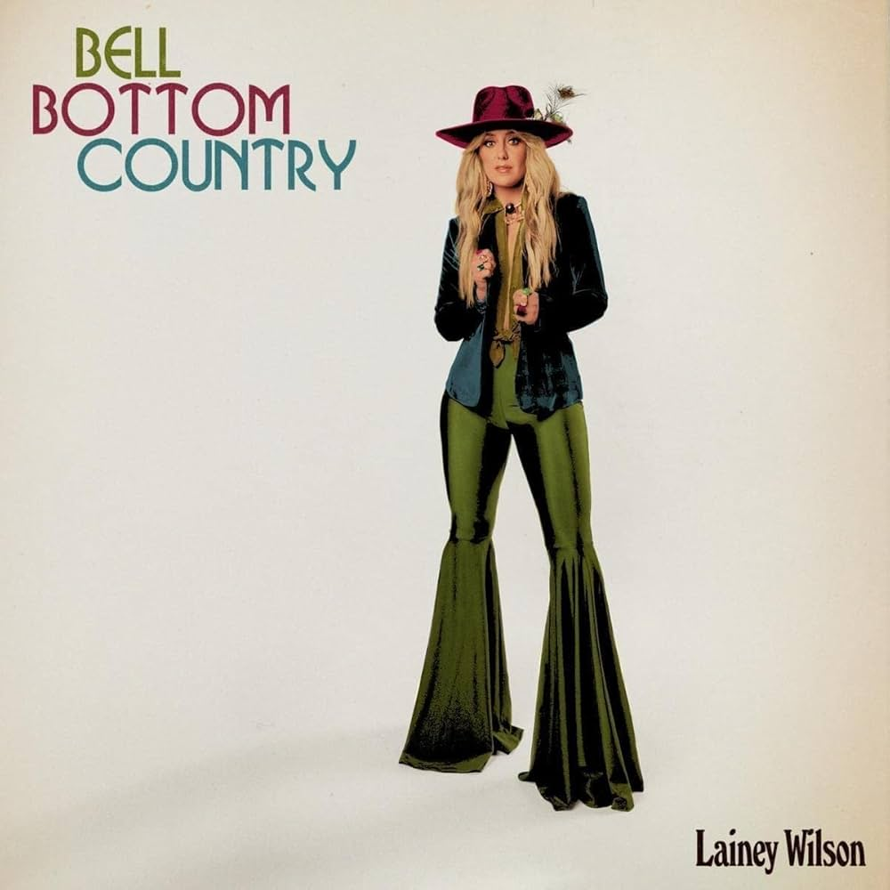
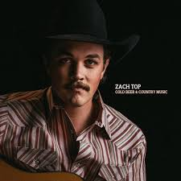

- SHOOT THE LOCK by Graham Barham
- Wondering Why by The Red Clay Strays
- WHISKEY WHISKEY by Graham Barham
- Sounds like the Radio by Zach Top
- 23 by Chayce Beckham
- Sold by John Michael Montgomery
- Humble and Kind by Tim McGraw
- Good Directions by Billy Currington
- Gone Country by Alan Jackson
- Little Bitty by Alan Jackson
The Red Clay Strays are one of my favorite bands, and I was lucky enough to attend one of their concerts. I did not exactly know who they were before I went to their concert, however they quickly became my favorite. It was amazing and absolutely packed at the event but overall a very cool experience, and the best concert I have been to this year.
Paul Cauthen was another concert I went to this year, and he was definitely an entertainer. His show was super fun and loud, amazingly enough Willow Avalon opened for him, which I knew most of the songs she played, and loved her part of the show.
Colter Wall was the most recent concert I was able to go to this year, it was definitely the most tame of all the concerts. But still a super fun experience, as he has a beautiful voice.
 





- Wondering Why
- Time 3:53
- I'm Still Fine
- Time 3:53
- Wanna Be Loved
- Time 3:37
- Moment of Truth
- Time 5:39
- Ghosts
- Time 4:23